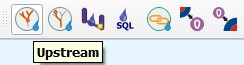
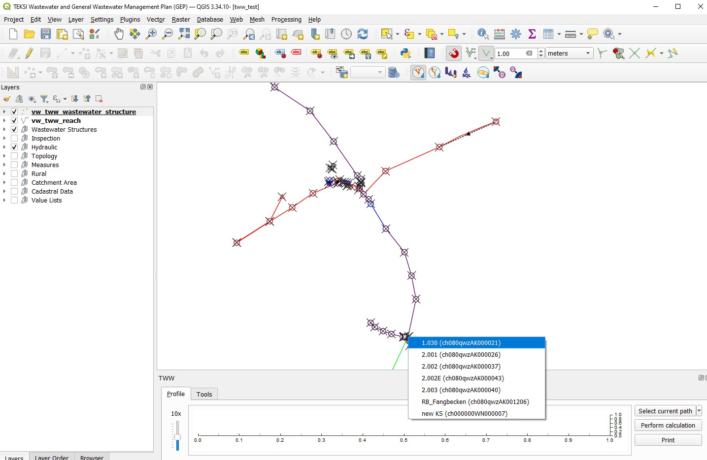
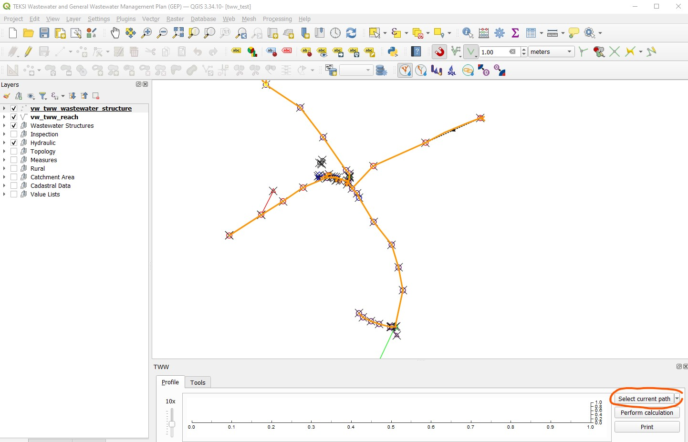
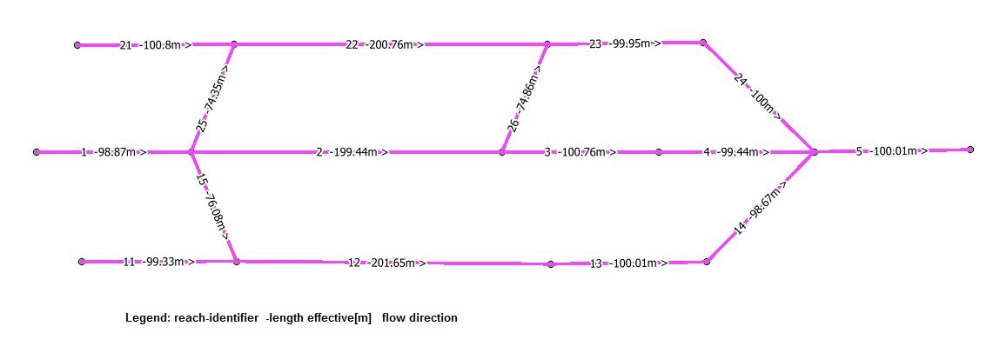
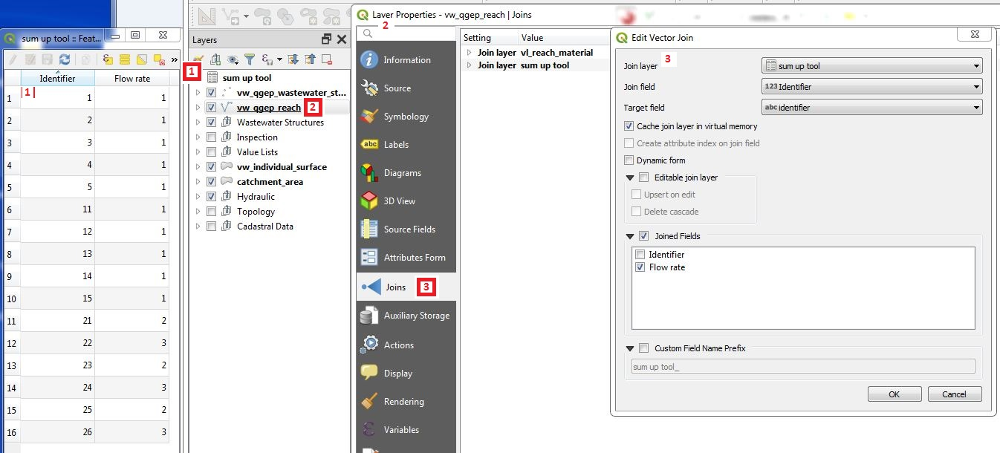
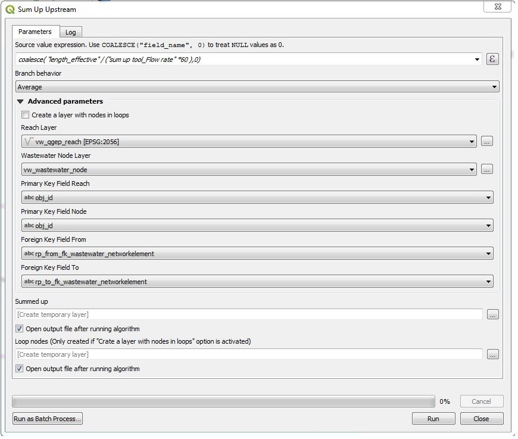
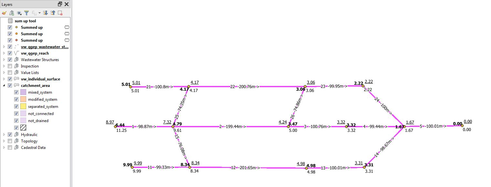
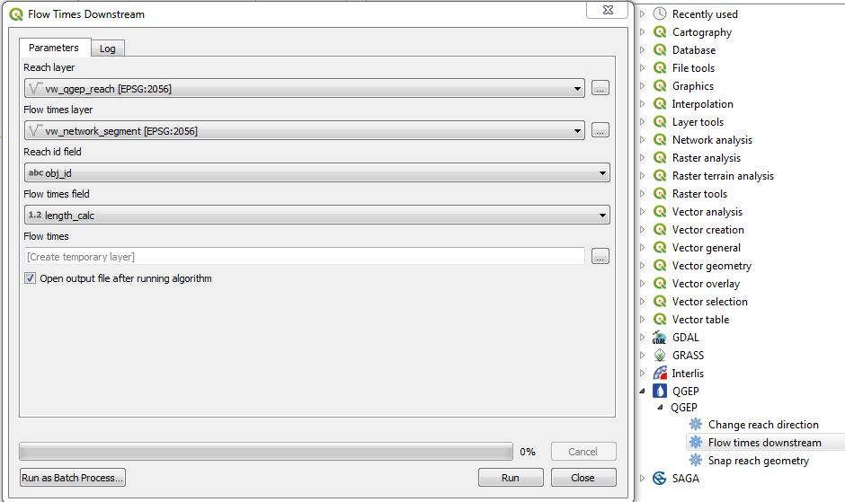
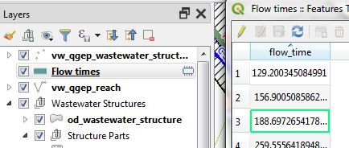

Outils de poursuite de réseau
Rafraîchir la topologie du réseau
Modifié dans la version 2026.0.
Notez qu’à partir de la version 2026.0, le bouton est masqué en mode administrateur, car la requête peut être assez longue pour les grands réseaux.
Avant d’utiliser les outils de suivi du réseau, assurez-vous que la topologie de votre réseau est à jour.
Pour actualiser la topologie du réseau, cliquez sur l’outil Actualiser la topologie du réseau (bouton avec SQL et goutte).
Le message Success: Network successfully updated s’affiche si cela a fonctionné
Flux amont
Peu importe la couche sélectionnée
Pour démarrer le suivi du réseau amont, sélectionnez le bouton TWW Upstream (amont).

TWW ouvre alors la fenêtre de profil en bas de la carte. Cliquez sur votre nœud de départ.
S’il y a plus d’un noeud dans la zone, sélectionner le bon dans la liste

Au bout de quelques secondes, tous les tronçons du flux amont seront surlignés et vous pourrez visualiser la provenance des eaux.
Si vous souhaitez sélectionner les tronçons surlignés et les regards connectés, cliquez sur le bouton Select current path (Sélectionner le chemin actuel) dans la fenêtre de profil.
Modifié dans la version 2025.0.
Dans la version TWW 2025, le bouton Select current path sélectionne également les enregistrements catchment_area connectés via fk_wastewater_networkelement_ww_current aux nœuds sélectionnés.

Vous pouvez maintenant travailler avec votre sélection de tronçons dans la table attributaire, ou zoomer sur les tronçons sélectionnés (si la couche vw_tww_reach est sélectionnée).
Utilisez cet outil pour vérifier que la topologie de votre réseau est correcte.
Note
Dans le bouton Select current path, il y a un menu Configure Select. Cette fonctionnalité ne fonctionne pas avec le plugin TWW actuel.
Flux aval
La poursuite de réseau flux aval fonctionne de la même façon que la poursuite de réseau flux amont décrite ci-dessus.
Vous pouvez voir l’écoulement de l’eau.
Vérifiez que TWW détecte également les déversoirs (overflows).
Utilisez ceci pour contrôler si la topologie de votre réseau est correcte ou pour découvrir à quel endroit vous pourriez intervenir en cas d’accident.
Cumul amont (Sum up upstream)
Il s’agit d’un outil de la boîte à outils TWW.
L’idée de cet outil est de cumuler une valeur sur l’ensemble du réseau de canalisations, par exemple le temps d’écoulement de chaque point jusqu’à l’exutoire du réseau.
Pour cet outil, vous avez besoin d’un champ dans la couche vw_tww_reach contenant les valeurs à cumuler. Comme les valeurs intéressantes ne font généralement pas partie de cette couche, vous devez d’abord joindre le champ de valeur (par exemple temps d’écoulement ou débit) à la couche vw_tww_reach.
À titre d’exemple, voici un petit réseau, étiqueté avec l’identifiant du tronçon, la longueur et la flèche du sens d’écoulement.

Nous avons besoin d’une table (appelée « sum up tool » dans l’exemple) avec au moins deux champs : un champ identifiant pour la jointure et un champ débit (dans l’exemple en [m/s]) à cumuler.
Ouvrez les propriétés de la couche vw_tww_reach, choisissez Jointures puis Ajouter une nouvelle jointure (bouton + vert), et définissez la jointure avec le champ de jointure (identifiant) et les champs joints (champ à cumuler).

Démarrez l’outil en double-cliquant sur Sum up upstream (cumul amont)


Dans la fenêtre, vous devez saisir/choisir :
une expression comme indiqué dans le titre du champ (COALESCE(« nom_du_champ »,0). Si vous n’utilisez pas la commande coalesce, vous obtiendrez une erreur lors de l’exécution de l’outil s’il y a des valeurs NULL dans le champ à cumuler. Dans la figure, l’exemple montre le calcul du temps d’écoulement en [minutes], calculé à partir de la longueur effective et du débit en [m/s].
le comportement de branche (Minimum, Maximum, Moyenne) : quelle valeur sera utilisée lorsque deux branches se rejoignent pour poursuivre le cumul.
les paramètres avancés sont préconfigurés pour TWW et ne devraient pas nécessiter de modification.
Summed up (résultat cumulé) : si vous laissez ce champ vide, une couche de points temporaire contenant les résultats sera créée dans votre projet. Sinon, vous pouvez enregistrer les résultats dans une nouvelle couche vectorielle de points.

La couche vectorielle de points résultante contient les champs de la couche vw_wastewater_node ainsi qu’un champ supplémentaire value avec la somme pour chaque regard (wastewater node). * Dans la figure ci-dessous, vous voyez le résultat de l’exemple avec les trois comportements de branche : minimum = style normal, maximum = gras, moyenne = souligné.

Temps d’écoulement en amont du réseau.
Il s’agit d’un outil de la boîte à outils TWW.
L’idée de cet outil est d’obtenir le temps d’écoulement entre un point de départ (où se produit par exemple un incident) et un ouvrage d’assainissement intéressant en aval. L’idée n’est pas de créer un plan de temps d’écoulement pour l’ensemble d’un réseau avec cet outil (utilisez l’outil SumUpUpstream pour cette tâche).
Pour cet outil, vous avez besoin d’une couche (table) dans le projet TWW contenant le temps d’écoulement par tronçon et l’obj_id du tronçon.
Vous devez sélectionner le tronçon de départ (où se trouve l’incident) dans la couche vw_tww_reach.
Démarré l’outil en double-cliquant sur Flow times downstream
Dans la fenêtre qui s’ouvre, choisissez
en tant que couche de tronçons (reach layer) : vw_tww_reach
comme couche de temps d’écoulement: la table que vous avez créée avec le temps d’écoulement et l’obj_id de chaque conduite
comme champ d’identifiant pour la conduite: le champ dans votre table contenant les obj_id des conduites
comme temps d’écoulement: le champ qui contient les temps d’écoulement dans votre table
Si vous laissez le champ du temps d’écoulement vide, cela va créer une couche temporaire avec les résultats dans votre projet. Sinon vous pouvez l’enregistrer en temps que couche vecteur.

L’outil effectue une recherche de l’écoulement aval à partir de la conduite sélectionnée comme point de départ. Un champ par conduite est enregistré avec la somme des temps d’écoulement.

Attention
S’il y a plus d’un chemin possible pour l’écoulement aval, les résultats seront faux après l’embranchement.
Dans certain cas, le résultat pourra être nul et une erreur en rouge dans le journal des messages
Ne sélectionnez pas plus d’une conduite de départ
Ne sélectionnez pas vw_tww_reach comme couche de temps d’écoulement (flow time layer) (pour cumuler la longueur, utilisez la couche vw_network_segment).
Une erreur sera soulevée si aucunes valeurs ne correspond à l’obj_id de la conduite